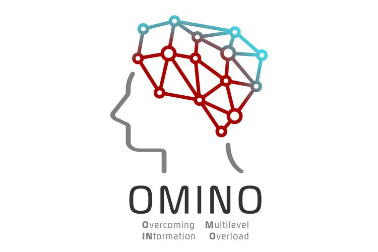

What's going on
I'm honoured to serve as the new chair of the BCS Information Retrieval Specialist Group (IRSG)!
SCOLIA 2025, the First International Workshop on Scholarly Information Access, is the successor of our successful Bibliometric-enhanced IR workshop series. The SCOLIA (SChOLarly Information Access) workshop aims to bring together researchers and practitioners from Information Retrieval (IR), Natural Language Processing (NLP), and Scientometrics/Bibliometrics who are working on the analysis of scientific/scholarly documents. SCOLIA will take place along ECIR 2025. We are calling for papers, please see our homepage for details!
About me
 I am Reader (Associate Professor
equivalent) in Data Science in the
School
of Engineering, Computing and Mathematical Sciences at the University of Wolverhampton in the UK. I am the head and
founder of the Data Science, AI, Information Retrieval and NLP research group DAIREL. Furthermore, I am Adjunct Professor (Lehrbeauftragter) at
the Bern University of Applied Sciences in Biel/Bienne,
Switzerland.
With a general interest in Data Science
and Artificial Intelligence
(AI), my focus is on human-centric Information Retrieval, generative AI and
its application in disciplines such as
Digital Libraries. I was general chair
of ACM CIKM 2023. I am chair of the BCS Information Retrieval Specialist Group (BCS-IRSG).
I am Reader (Associate Professor
equivalent) in Data Science in the
School
of Engineering, Computing and Mathematical Sciences at the University of Wolverhampton in the UK. I am the head and
founder of the Data Science, AI, Information Retrieval and NLP research group DAIREL. Furthermore, I am Adjunct Professor (Lehrbeauftragter) at
the Bern University of Applied Sciences in Biel/Bienne,
Switzerland.
With a general interest in Data Science
and Artificial Intelligence
(AI), my focus is on human-centric Information Retrieval, generative AI and
its application in disciplines such as
Digital Libraries. I was general chair
of ACM CIKM 2023. I am chair of the BCS Information Retrieval Specialist Group (BCS-IRSG).
Prior to this, I was Senior Lecturer in the School of Computer Science and Technology of the University of Bedfordshire in Luton, UK. I was a member of the Information Retrieval group at the School of Computing Science of the College of Science and Engineering at the University of Glasgow. Before I was working in the Information Systems Working Group at the Faculty of Engineering of the University of Duisburg-Essen, where I did my PhD on information modelling and retrieval based on user annotations. Before joining the group in Duisburg, I worked at Fraunhofer IPSI on annotation-based retrieval in Digital Humanities.
I hold a PhD from the University of Duisburg-Essen and Diploma (Diplom-Informatiker, MSc equivalent) in Computer Science from the University of Dortmund. I am a BCS Fellow as well as a Fellow of the Higher Education Academy.
I am the University of Wolverhampton's Principle Investigator of the EU Horizon Europe Marie Skłodowska Curie Staff Exchange project OMINO (Overcoming Multilevel INformation Overload). In this project, we apply information retrieval, retrieval-augmented generation and generative AI to tackle information overload. I was the University of Bedfordshire's Principal Investigator of the EU H2020 Innovative Training Network QUARTZ (Quantum Information Access and Retrieval Theory), which is concerned with formal approaches to Information Access and Retrieval based on the quantum mechanical framework. Furthermore, I have been leading and working in several national and international research and knowledge transfer projects.
Research Interests
The aim of my main lines of research is to tackle information overload (see our Nature Human Behaviour article) by supporting users in finding relevant information in large data collections more effectively. To this end, I utilise my Computer Science background and amalgamate methods from AI, Deep Learning, Information Retrieval, Information Science, NLP and Data Science. I employ cognitive and human-centric theories and combine these with mathematical modelling (e.g., quantum mechanical models), (generative) AI, machine learning and embedding models to bring the human into the loop.
In particular, I have been working on the following topics (links lead to peer-reviewed example papers):
- Chatbots and Retrieval-augmented Generation (RAG)
- Large Language Models, Authorship Attribution and Data Augmentation
- Interactive Information Retrieval inspired by Quantum Mechanics
- Probabilistic and logic-based models for Information Access and Retrieval (e.g. probabilistic Datalog)
- Interactive Information Retrieval models utilising the Principle of Polyrepresentation or Information Foraging Theory
- Bibliometric-enhanced Information Retrieval
- Annotations, Annotation Services and Information Access in Digital Humanities and Digital Libraries
- (Deep) Machine Learning and Information Retrieval
- Text Categorization and Email Categorization
- User support for Question Answering and Semantic Search on Linked Open Data
- Neural Networks and Recommender Systems
- Discussion Search and Polarity Classification
- Text Analysis and Machine Learning for Cyberstalking Detection
- Cross-cultural Information Retrieval
Please contact me if you are interested in a BSc, MSc or PhD project in these areas.
Research/Knowledge Transfer Projects
I have been PI and been involved in several national and international research and knowledge transfer projects.Research Projects
- OMINO - Overcoming Multilevel INformation Overload - PI of the EU Horizon Europe MSCA Staff Exchange project (guarantee funded by UKRI) to tackle information overload for instance in academic search and recommendation (PI)
- RIGHT - Responsible Digital Humanities Lab - Digital Humanities with Deep Learning and NLP. Internally funded project at the University of Wolverhampton (PI)
- LASER - Large Language Models for Academic Search and Retrieval. Internally funded PhD project at the University of Wolverhampton (PI)
- Quantum Information Access and Retrieval (QUARTZ), an EU H2020 Innovative Training Network (PI)
- EDISON, an EU H2020 Coordination and Support Action with the purpose of accelerating the creation of the Data Science profession. I established the University of Bedfordshire as Data Science Champion University.
- Renaissance - Modelling Information Retrieval processes using the formalism of Quantum Theory. EPSRC project.
- INEX Interactive Track 2010
- POLAR - Probabilistic Object-oriented Logics for Annotation-based Retrieval (my own PhD project)
- CLASSIX - Classification and Intelligent Search on Information in XML. DFG (German Research Foundation) project.
- Initiative for the Evaluation of XML retrieval (INEX)
- LACOSTIR - LAyout, COntent and STructure in Interactive Retrieval. DFG (German Research Foundation) project.
- DELOS - EU-FP6 Network of Excellence on Digital Libraries
- DAFFODIL - Distributed Agents for User-Friendly Access of Digital Libraries. DFG (German Research Foundation) project.
- COLLATE - Collaboratory for Annotation, Indexing and Retrieval of Digitized Historical Archive Material. EU-FP5 project.
- BRICKS - Building Resources for Integrated Cultural Knowledge Services. EU-FP6 project.
- SCHOLNET - A Digital Library Testbed to Support Networked Scholarly Communities. EU-FP5 project
- VIP-Advisor - Virtual, independent advisor for personal insurance and finance risk management. EU-FP5 project.
Knowledge Transfer Projects
- SOLVD - EU European Regional Development Fund project to support Telford & Wrekin and Shropshire small and medium sized enterprises (SMEs) in the adoption of digital technologies
- KIIB, EU-EUREGIO project on business processes and email classification, with d.velop AG, Gescher, Germany. (PI)
- Talking Objects, Augmented Reality in museums for children (PI, with Luton Culture and Luton Wardown Park Museum)
- Knowledge Transfer Project with Drax Technology on Internet of Things and intelligent fire alarms (lead academic)
- Great War Stories - A crowdsourced digital museum about World War I as experienced by the people in Luton, a town in England (PI)
- Intelligent Executive Search, a commercial search engine for executives (private commercial consultancy project)
- Several Innovation Voucher and Innovation Bridge projects
Research Supervision
Completed PhD Projects
- Amit Kumar Jaiswal: Investigation of Quantum-inspired Modelling in Interactive Search based on Information Foraging Theory. Awarded 2023. Second Supervisor.
- Mahmoud Artemi: A Theory-based Content-based Image Retrieval Approach for Capturing User Preferences during Query Formulation. Awarded 2022. Second Supervisor.
- Nicholas Collis: AQUACOLD - Aggregated Query Understanding and Construction Over Linked Data. Awarded 2021. First Supervisor.
- Karen Chessum: A Conceptual Framework to Support Cross-cultural User Experience Design for Web Search. Awarded March 2021. First Supervisor.
- Tess Crosbie: A Computer Assisted Analysis of Literary Text: From Feature Analysis to Judgements of Literary Merit. Awarded 2017. Second Supervisor.
- Ghulam Mustafa: An Examination of Artificial Neural Networks for Contextual Recommendation. Awarded 2017. First Supervisor.
- Kamran Abbasi: A Probabilistic Approach for Cluster Based Polyrepresentative Information Retrieval. Awarded 2015. First Supervisor.
- Obaid Almalki: A Framework for e-Government Success from the User’s Perspective. Awarded 2015. Second Supervisor.
Completed MSc by Research Projects
- Usman Ali: Use of Machine Learning to Reduce False Alarms. Awarded 2021. First Supervisor.
- Sebastian Grygiel: Developing and Evaluating a Cost-effective Solution for Augumented Reality Conversational Agents for Museums. Awarded 2019. First Supervisor.
Teaching
I am coordinator of the MSc Computer Science and Data Science and MSc Computer Science and Artificial Intelligence online MSc Programmes at the University of Wolverhampton.
I was the coordinator of the BSc (Hons) Information and Data Systems, BSc (Hons) Information Systems and BSc (Hons) Data Science courses/programmes during my time at the University of Bedfordshire.
Topics I have been teaching at undergraduate and postgraduate level comprise:
- Information Retrieval
- AI and Machine Learning
- Information Engineering
- Data Mining
- Web Science and Semantic Web
- Programming (mainly Java)
- Databases
- Data Modelling and Management
- Distributed and Parallel Computing
Research-related Activities
Some of my research-related activities include:CV
- Full CV (PDF, long, all publications)
- Shorter CV (4 pages, PDF, selected publications)
- Even shorter CV (2 pages, PDF, no publication list)
Trivia
- Being brought up in Gelsenkirchen, I am a proud supporter of FC Schalke 04. If you're a Schalke supporter in the UK, have a look at our Schalke Fan Club UK.
- I enjoy running (up to half marathon distance)
Follow me on